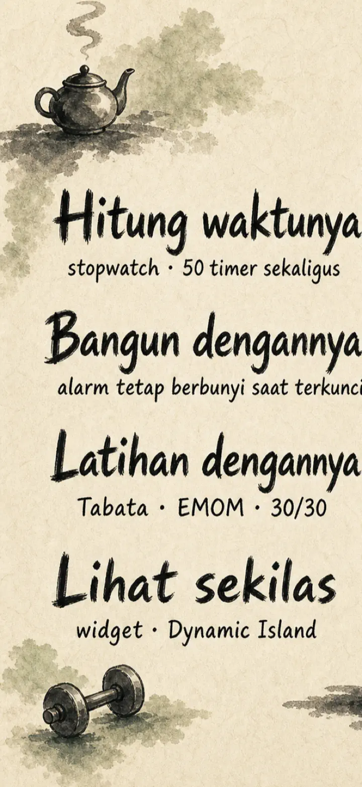
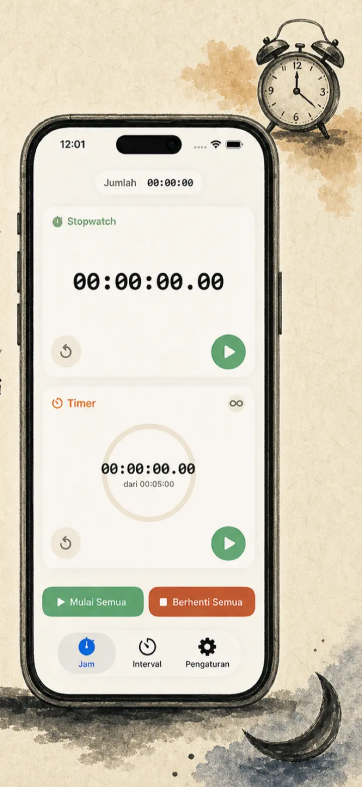
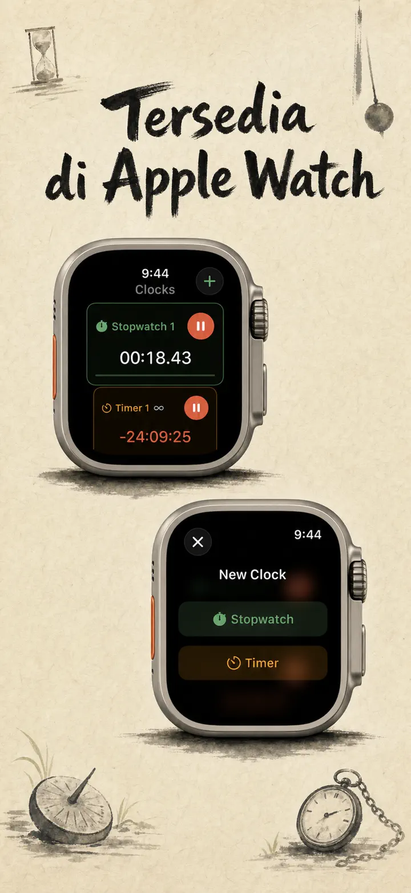
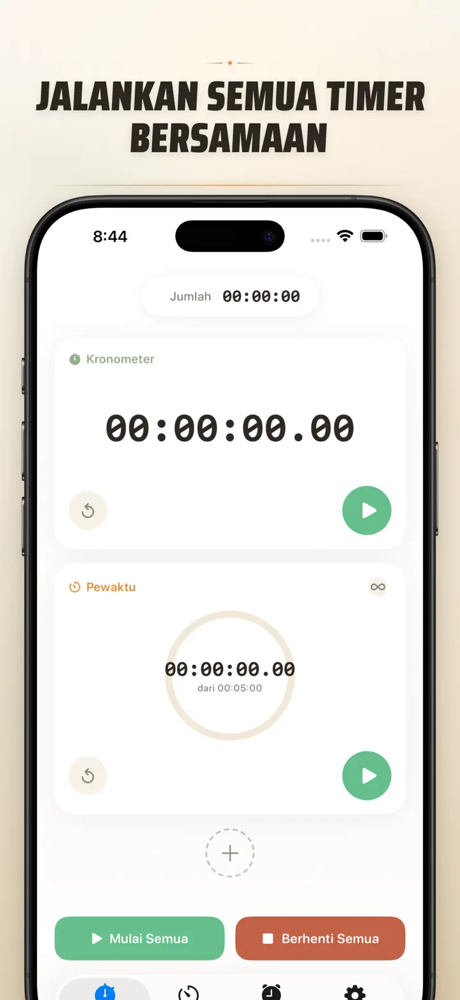
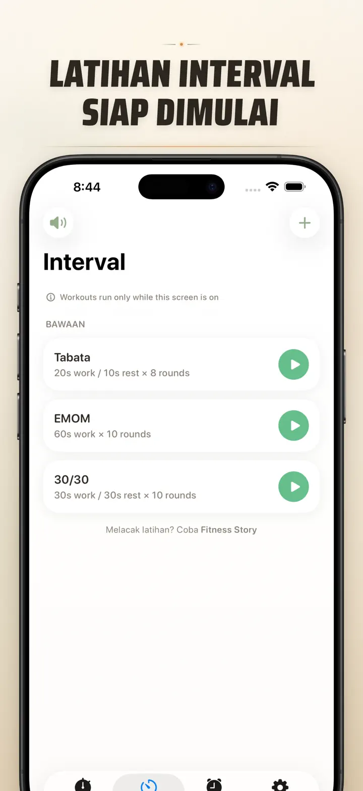
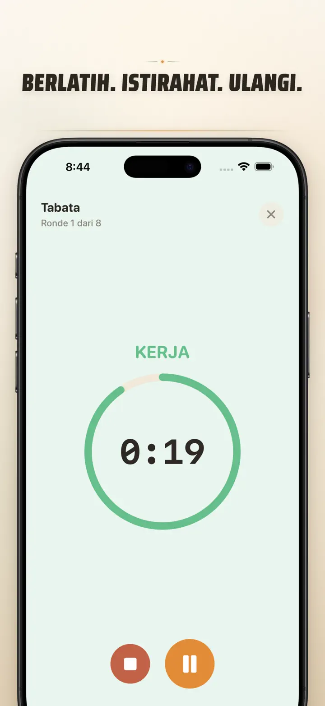
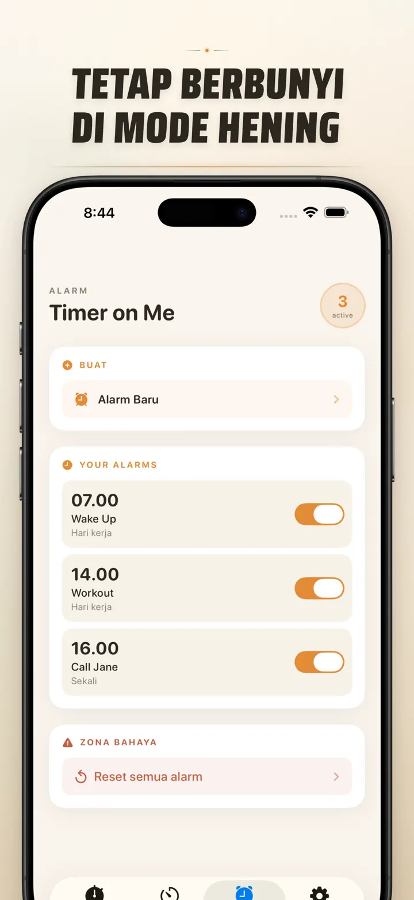

Timer on Me
Timer, Alarm, Stopwatch, HIIT
Kini hadir alarm tanggal: atur alarm sekali untuk tanggal & waktu mendatang, bersama alarm berulang, 50 timer sekaligus, HIIT & Tabata, dan Apple Watch.
Unduh di App Store
Tentang aplikasi
Timer on Me adalah multi timer dan stopwatch-mu untuk iPhone, iPad, dan Apple Watch. Hingga 50 timer independen sekaligus, latihan interval yang presisi, dan alarm yang benar-benar bunyi — bahkan saat iPhone terkunci atau aplikasi tertutup.
ALARM
- Alarm bangun dan pengingat dengan label khusus dan jadwal per hari
- Didukung AlarmKit — tetap berbunyi meski iPhone terkunci atau Timer on Me tertutup
- Snooze yang dapat diatur (3 / 5 / 9 / 15 / 30 menit) atau tanpa snooze
- Pilih nada bawaan atau impor suara sendiri
- Aktifkan/nonaktifkan sekali ketuk dari tab Alarm khusus
LATIHAN DAN INTERVAL
- Preset Tabata, EMOM, dan 30/30 siap pakai — dua ketukan dan langsung jalan
- Editor interval khusus: kerja, istirahat, dan ronde dalam menit dan detik
- Mode latihan layar penuh dengan perubahan warna per fase dan opsi senyap
- Jeda, lewati, dan lanjut di tengah sesi tanpa kehilangan progres
APPLE WATCH
- Aplikasi watchOS native sungguhan, bukan sekadar cermin dari ponsel
- Banyak stopwatch dan timer jalan di pergelangan tangan sekaligus
- Stopwatch akurat hingga seperseratus detik
- Complication tampilan jam khusus untuk start sekali ketuk
- Bisa jalan sendiri, tanpa iPhone di dekatnya
50 TIMER SEKALIGUS
- Hingga 50 timer dan stopwatch independen dalam satu sesi
- Mulai, berhenti, dan reset satu per satu atau grup
- Auto-repeat untuk ronde siklus
- Timer lanjut terus setelah nol untuk catat overtime
- Progress bar berwarna: kuning di 50%, merah di 10%
- Seret untuk mengurutkan, beri nama sendiri
NOTIFIKASI ANDAL
- AlarmKit: alarm tetap bunyi bahkan saat iPhone terkunci atau aplikasi tertutup
- Dynamic Island dan Live Activity — progres sekilas pandang
- Widget layar utama: kecil, sedang, besar
- Nada bawaan: lonceng, kicau burung, telepon vintage
- Ketuk untuk dengar sebelum memilih
- Mode "Jaga layar tetap nyala" untuk sesi panjang
KUSTOMISASI DAN BAGIKAN
- Tampilkan atau sembunyikan desimal, total, dan persentase
- Simpan dan timpa preset, panggil lagi dengan sekali ketuk
- Ekspor sebagai CSV, JSON, atau teks biasa
- Bagikan ke rekan kerja, siswa, atau pelatih
UNTUK iPhone, iPad, DAN APPLE WATCH
- Tata letak menyesuaikan segala ukuran layar
- Split View di iPad
- 34 bahasa
COCOK UNTUK
- HIIT, Tabata, CrossFit, dan circuit training
- Ronde tinju, muay thai, dan bela diri
- Pomodoro, UTBK, ujian sekolah, dan fokus belajar
- Seduh kopi tubruk, teh tarik, telur rebus, nasi goreng, rendang, dan waktu oven
- Yoga, pilates, meditasi, dan latihan pernapasan
- Gladi bersih presentasi dan latihan alat musik
- Pelajaran, workshop, dan aktivitas kelompok
- Permainan papan dan kumpul bareng teman
Download Timer on Me dan kendalikan setiap menitmu — di gym, di kantor, atau di rumah.
Kebijakan Privasi: https://masawata.net/privacy-policy.html Syarat Layanan: https://www.apple.com/legal/internet-services/itunes/dev/stdeula/
Tangkapan layar






Timer on Me
Kini hadir alarm tanggal: atur alarm sekali untuk tanggal & waktu mendatang, bersama alarm berulang, 50 timer sekaligus, HIIT & Tabata, dan Apple Watch.
Unduh di App Store